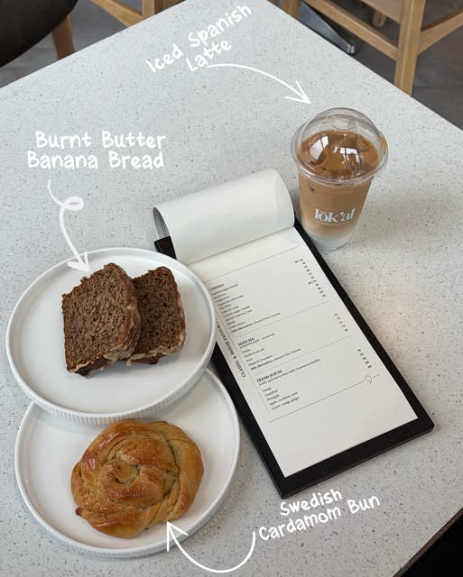
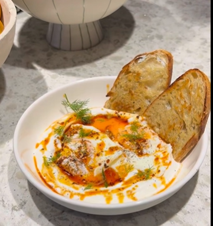
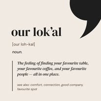
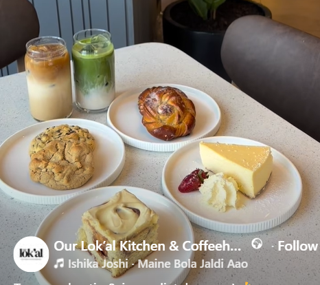

Kitchen & coffeehouse · Gaborone
Good food starts at home.
Our Lok'al is where good food, great coffee and good company come together. Pull up a chair and stay awhile.


Welcome to your new favourite spot
Come for the coffee. Stay for the company.
At Our Lok'al, we make the kind of food that brings people closer: warm bakes, thoughtful plates and coffee worth slowing down for. Come as you are. Leave feeling at home.
The Lok'al way
Made close to home.
From the first pour to the last bite, everything is made with care and served with a little more time.
Great coffee
Espresso, filter and iced favourites, brewed to order.
Fresh every day
Handmade bakes and pastries from our kitchen each morning.
All-day plates
Comforting, generous plates for slow mornings and long lunches.
Local at heart
Proudly part of the Piazza Level community at The Square CBD.
Good company
A table for catching up, celebrating, or simply being together.
Feel at home
Find your favourite table and make it yours for the afternoon.
See you soon
Make a morning of it.
A good word
Made for your kind of people.
“
A place to slow down, have a really good coffee, and feel looked after.
Our Lok'al guest
Good company, always
“
The kind of room where a quick coffee can easily become a long lunch.
Piazza Level regular
Here for the bakes
“
Come hungry, bring someone you love, and let the afternoon take its time.
The Lok'al table
Gaborone, Botswana

The heart of it
Our Story
Our Lok'al is a small idea with a big welcome: a place for good food, good coffee and the people who make a place feel like home.
Read Our Story
From the kitchen
Something for every mood.
Fresh bakes, iced drinks and all-day plates — made for quiet catch-ups, big conversations and everything in between.
See the MenuPlan your visit
Your table is waiting.
Find us at Wing A, Piazza Level, The Square CBD. Reserve ahead, or simply drop in when the mood takes you.
Reserve a Table